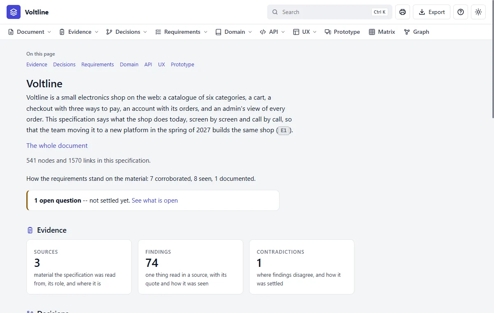

Step 20 of 20 · The big one
Voltline, the finished product
You've made a small specification. Voltline is the same thing, full size: a made-up online electronics shop, written up by reading the shop itself. Open it from the skill's folder, in examples/shop/specs, the same way as the bakery.
| Your bakery | Voltline | |
|---|---|---|
| Facts | 186 | 541 |
| Links | 357 | 1,570 |
| Requirements | 9 | 16 |
| Screens | 5 | 18 |
| Components | 6 | 13 |
| Calls for programs | None | 13 |
| Where it came from | A conversation | Read from a running shop, with 74 findings |


The Graph is where size pays off
At 5 screens you could hold it in your head. Not at 541 facts:


Try these in Voltline
| Try | How |
|---|---|
| Find why a rule exists | Search for five, open rule B1, and read Linked from |
| See the proof | Open finding E14, and read the quote from the old shop |
| See what a change would reach | On B1, press Impact, and click R4 to go further |
| See what isn't settled | Open What is open, from the overview |
| Ask for a change | Press Request a change on any node: it waits for Claude, and nothing changes yet |
On a copy, you could ask Claude what you did in Part C: add, remove and change. The manual follows one such change all the way, in The story: five becomes six.
Where to go next
- Make your own. Start again at Step 2 with your own idea. Keep it small, and let Claude ask.
- Keep the user manual by you. It explains each part of the site in depth, and has every word and command.